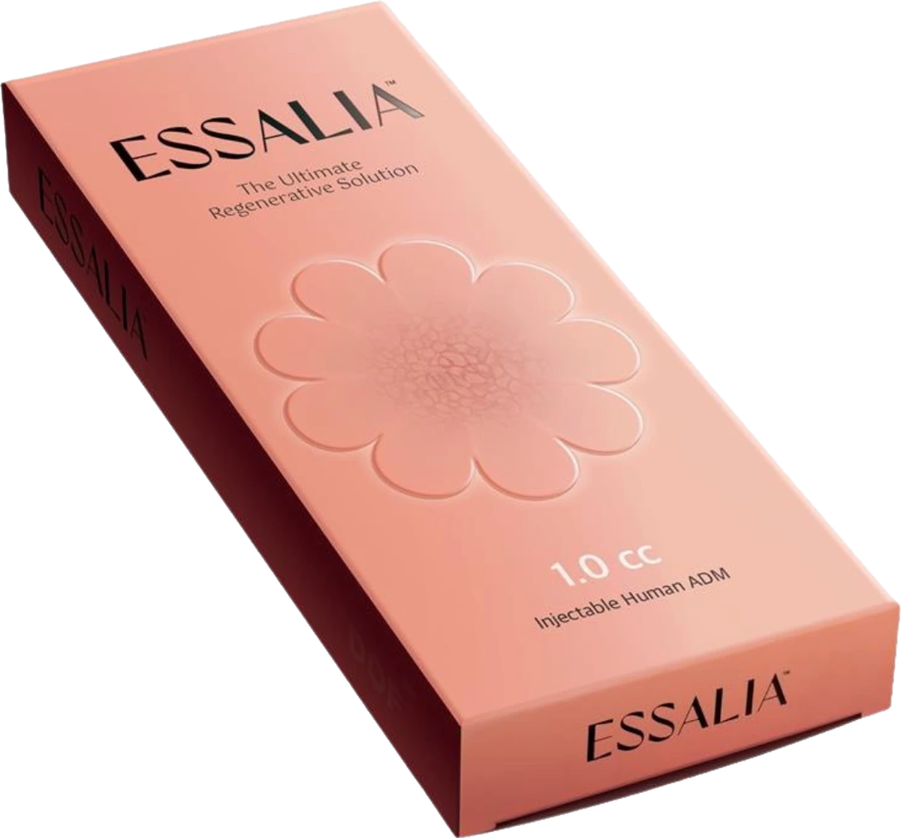

Essalia in Penang | CANVAS Medical Clinic
Injectable human acellular dermal matrix, physician-administered at Gurney Walk, George Town. Essalia supplies the collagen, elastin and proteoglycan scaffold to skin that has lost its own, rather than hydrating it.


What is Essalia?
Essalia is an injectable human acellular dermal matrix, supplied as a 1.0 cc presentation and positioned by its maker as a regenerative solution rather than a hydrating one. ADM stands for acellular dermal matrix: donated human dermal tissue that has been processed to strip out the cells, leaving behind the extracellular matrix — the scaffold of collagen, elastin and proteoglycans that gives skin its firmness, elasticity and capacity to repair.
At CANVAS Medical Clinic in George Town, Penang, Essalia sits in the ECM group of our injectable formulary alongside ELRAVIE Re20 and Adité. All three take the same approach — supplying matrix material to skin that has lost its own — and our physicians will explain what that means, and what it is made from, before anything is booked.
How it works
- Consultation and assessment. A physician examines your skin, takes a full history, and explains plainly that the product is derived from donated human tissue so your consent is properly informed.
- Mapping the areas. Treatment is planned to where the matrix has thinned — commonly the face, neck and décolletage — rather than applied uniformly.
- Micro-injection. The matrix is placed into the dermis with a fine needle or cannula, with topical anaesthetic where appropriate.
- Course and maintenance. Typically a short course spaced a few weeks apart, then periodic maintenance, with review so the plan follows your response.
Benefits
Supplies the scaffold
Delivers matrix components rather than only prompting them.
Structure, not volume
Aimed at firmness and resilience, not projection.
Matches skin's own make-up
Collagen, elastin and proteoglycans, as skin builds them.
Suits thin, crepey skin
An option where volumising would look wrong.
Little downtime
Injection marks and mild swelling for a few days at most.
Physician-administered
Every injectable at CANVAS is given by a qualified doctor.
Who it's for
Essalia may suit you if you:
- Have skin that has thinned, slackened or lost its resilience
- Want skin quality and structure rather than added volume
- Have found hydrating skinboosters helpful but not lasting enough
- Are willing to complete a short course and maintain it
- Want the product and its origin explained before you decide
- Prefer a physician to tell you honestly if something else fits better
Essalia is not appropriate during pregnancy or breastfeeding, with active infection or inflammation in the treatment area, or where a relevant allergy or sensitivity exists. Because it is derived from donated human tissue, some patients have religious or personal considerations about it — raise this at consultation and we will discuss alternatives openly, with no pressure either way. Results differ between individuals, and suitability is always confirmed at consultation.
The three ECM injectables compared
Our formulary carries three products in this category, and they share a mechanism rather than compete on one. Essalia is an injectable human ADM at 1.0 cc. ELRAVIE Re20 is a micronised human acellular dermal matrix from Humedix. Adité comes from MedPark's human tissue-based platform. Which one a physician reaches for depends on your skin, the area and clinical judgement rather than a ranking.
If your goal is closer to hydration, a Profhilo or skinbooster route may serve you better; if it is collagen specifically, Collaju or Linerase; and if it is volume, that is a dermal filler conversation altogether.
Why CANVAS
At CANVAS Medical Clinic, every injectable is administered by qualified, LCP-certified physicians with proper storage and handling — and with the origin of a tissue-derived product explained before you consent, not after.
We are located at Gurney Walk in the heart of George Town, with covered parking at Gurney Walk and Gurney Plaza. Walk-ins are welcome but we recommend booking in advance.
- LCP-certified physicians administer every injectable — never delegated
- Informed consent, including what the product is made from
- Assessment and screening before treatment — honesty before sales
- We'll recommend a different injectable when it suits your goal better
- Central Gurney Walk location with easy covered parking
Essalia in Penang, answered.
Care led by our physicians
Your Essalia treatment at CANVAS is assessed and administered by qualified, LCP-certified doctors registered with the Malaysian Medical Council — injectables are never delegated to unsupervised operators. Meet the physicians behind your treatment:
- LCP CertifiedPhysician-led care
- MMC RegisteredQualified doctors
- Genuine SystemsAuthentic & registered
- Open Daily10am – 10pm
Related treatments
Explore other physician-led treatments at our Gurney Walk clinic in George Town, Penang.
From our patients
Read our reviews on Google →Considering Essalia in Penang?
Book a consultation at our Gurney Walk clinic. Our physicians will assess your skin, explain what an ECM booster is and what it is made from, and tell you honestly whether it is the right choice for you.
Reserve a Consultation